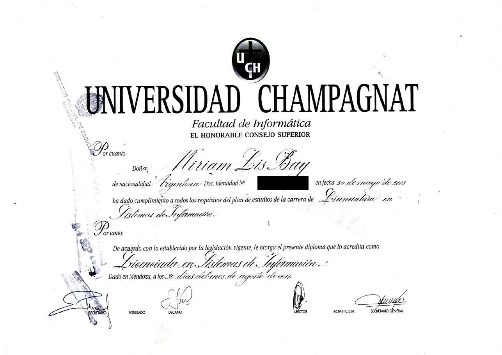
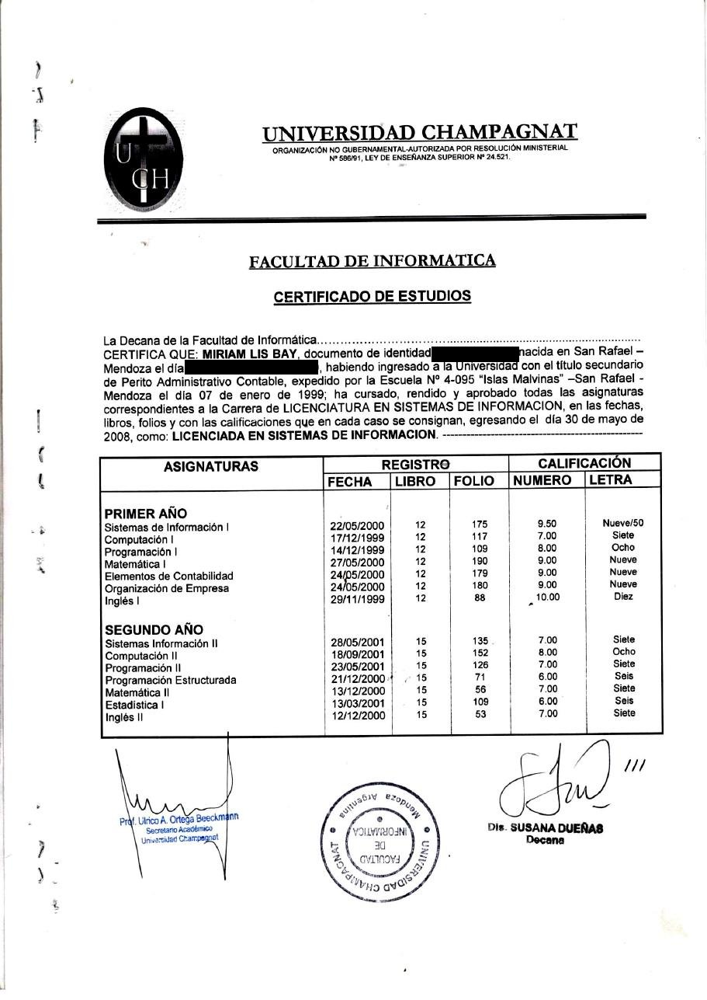
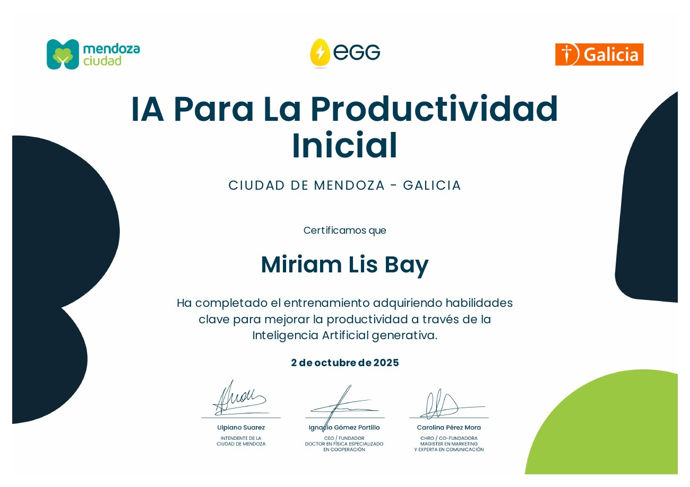
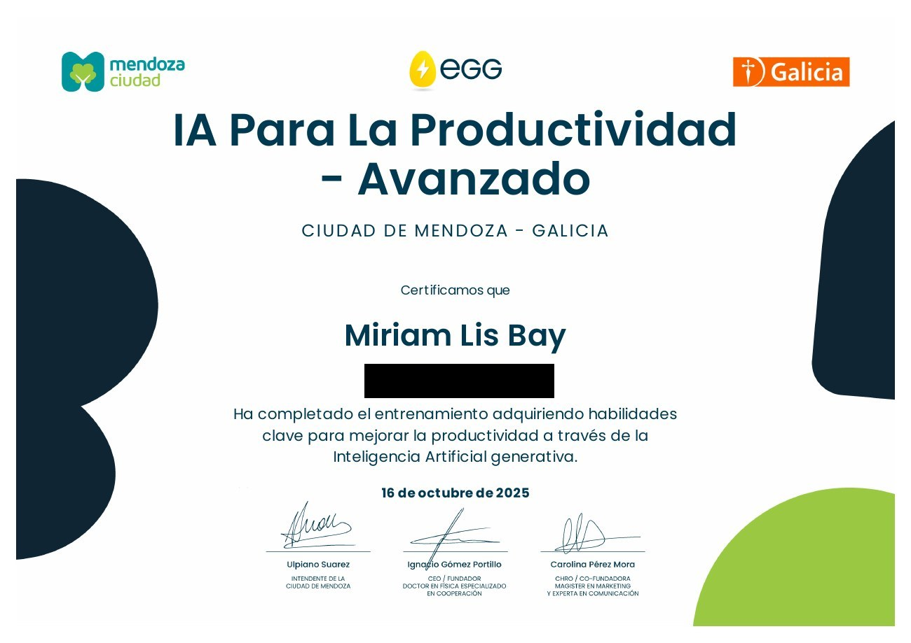
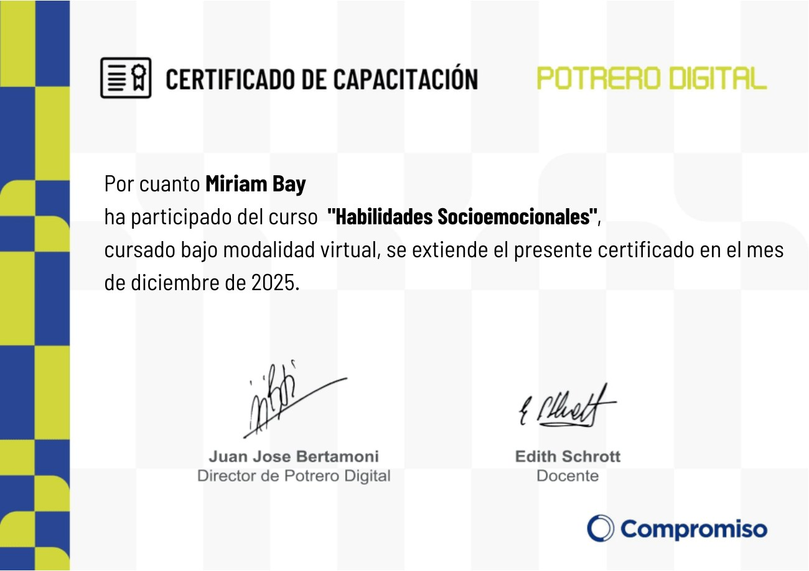
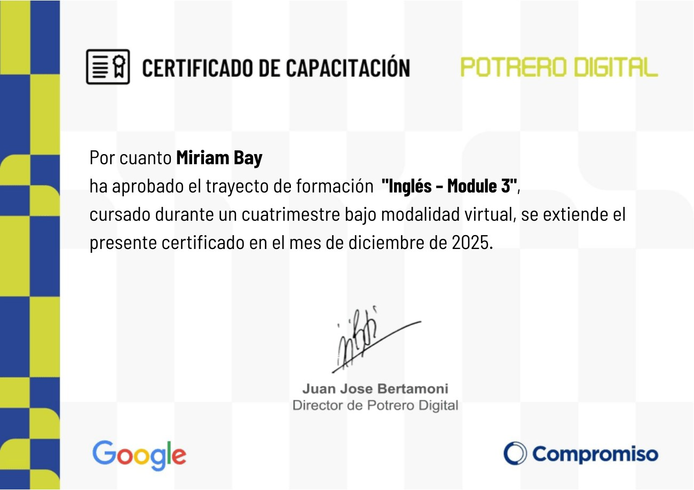
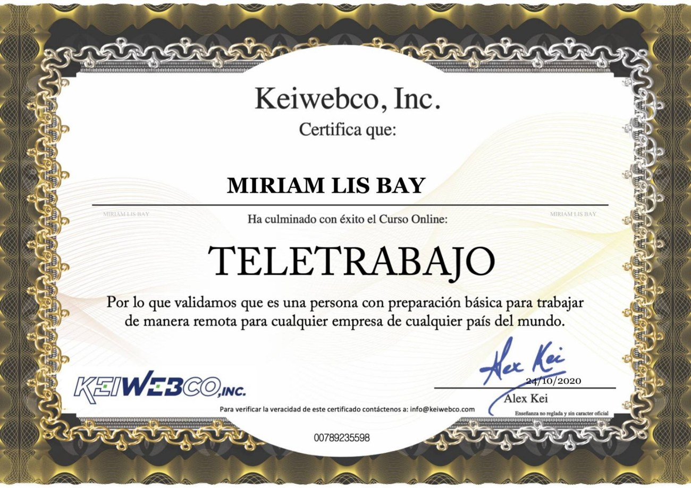
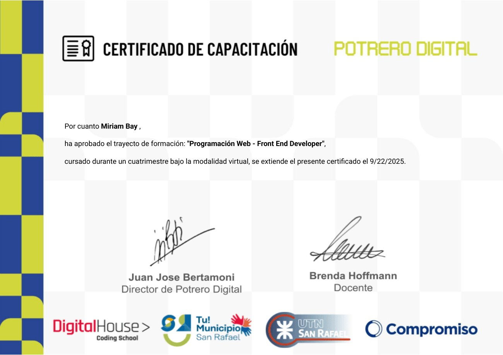

Licenciada en Sistemas de Información
Título universitario
Ver certificadoLicenciada en Sistemas de Información | Business Process Consultant
Soy Licenciada en Sistemas de Información e hija de comerciante. Conozco la lógica de los procesos y también la realidad del mostrador, gracias a mis años de trayectoria en el mundo corporativo. Hoy pongo esa experiencia al servicio de negocios que buscan ganar claridad, optimizar su día a día y crecer de forma ordenada.
Filosofía de trabajo: Primero comprender. Después simplificar. Luego organizar. Y recién al final, automatizar.
No vendo software ni herramientas prefabricadas. Analizo la forma en que su empresa opera, detecto oportunidades de mejora y diseño soluciones adaptadas a la realidad de su negocio para agilizar procesos y documentar el conocimiento.
LinkedIn: linkedin.com/in/miriambay
Con más de 25 años de trayectoria en entornos empresariales aplicando normas Kaizen —el sistema de trabajo enfocado a la calidad originado en Toyota— y estándares internacionales, mi forma de trabajar no parte de la teoría: nace de haber estado dentro de las empresas resolviendo situaciones críticas. Durante años me dediqué a ordenar procesos, eliminar fricciones y optimizar tiempos y costos para que cada negocio funcione de manera fluida, coordinada y previsible.
Mi forma de trabajar no parte de la teoría: parte de haber estado adentro de la operación, identificando la optimización de tiempo, de dinero y simplificando procesos para que el negocio funcione de manera fluida y coordinada.
Hoy elijo ejercer esa experiencia de forma independiente, en modalidad remota, ofreciendo el mismo nivel de exigencia con la flexibilidad de trabajar por proyecto.
El trabajo se apoya en herramientas de mejora continua y análisis de causa raíz, adaptadas a la escala y los recursos reales de cada organización, no a un ideal teórico. El objetivo no es imponer una metodología externa, sino auditar lo que ya existe y hacerlo más eficiente.
Títulos y cursos que respaldan mi formación.

Título universitario
Ver certificado
Detalle de materias cursadas (PDF completo, 3 páginas)
Ver analítico completo
Octubre 2025
Ver certificado
Octubre 2025
Ver certificado
Curso
Ver certificado
Inglés, Módulo 3 (Potrero Digital)
Ver certificado
Keiwebco
Ver certificado
Potrero Digital
Ver certificadoSector: Ferretería Industrial
La empresa convivía con diferencias frecuentes entre el stock disponible y el stock registrado, lo que generaba demoras en la preparación de pedidos, ajustes en las entregas y ventas que no llegaban a concretarse por desajustes de inventario.
Se realizó un análisis integral del proceso operativo para identificar las fuentes de inconsistencia y se diseñó una solución a medida utilizando exclusivamente las herramientas informáticas con las que ya disponía el cliente, logrando una inversión nula en licencias de software o infraestructura nueva. El proyecto se estructuró de manera 100% autogestionable sobre los recursos existentes, con opciones modulares de automatización opcionales para cuando el crecimiento lo requiera.